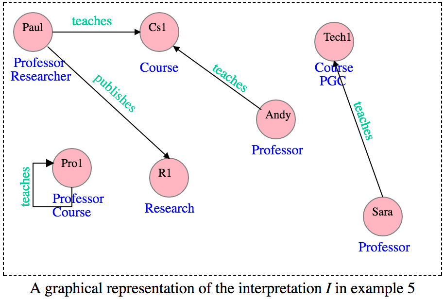

Building Blocks Syntax Semantics
ALC Semantics
Concept names stand for sets of elements but which set is open to intrepretation. To give meaning to concept names and role names, we formalise this notion of an interpretation as a mathematical structure that is based on a set and its domain. Moreover, an interpretation fixes which elements in its domain are in the extension of which concept names, e.g. who is in the extension of Professor .etc.
The set a concept represents is called its extension. For example, Paul is an element in the extension of Professor and Cs1 is an element in the extension of Course. We often use "is a" as an abbreviation for "is in the extension of", for example, "Paul is a Professor".
To formalise the exact meaning of the syntax, we make the use of the semantics that is based on an interpretation. The interpretation is a structure that:
• consists of a non-empty set called interpretation domain.
• fixes for each concept name, which of the elements is (or isn’t) in the extension of this concept;
• fixes for each role name, which pairs of elements are related to each other by this role [1].
• every concept name A ∈ C to a set AI ⊆ ΔI, and
• every role name r ∈ R to a binary relationI ⊆ ΔI x ΔI.
Note 4:
" • An interpretation is not restricted other than as explicitly specified above: its domain must be non-empty, but can be of any cardinality, that means it can be infinite.
• The extension of a concept can have any number of elements between “none” and “all”.
• A role can relate any number of pairs of elements, from “none” to “all”.
• AI stands for the result of applying the mapping .I to the concept name A." [1]
Example 5: The following is an example of an interpretation I for our university domain.
ΔI = {Paul, Andy, Cs1, Sara, Tech1, R1, Pro1}, Professor I = {Paul, Sara, Andy, Pro1}, Course I = {Cs1, Tech1, Pro1}, Research I = {R1}, teaches I = {(Paul, Cs1), (Sara, Tech1), (Andy, Cs1)}, (Pro1, Pro1)}, Researcher I = {Paul}, PGC I = {Tech1} publishes I = {(Paul, R1)}.
So far we have learned the textual representation of the interpretation. However, we can represent the interpretation in a graphical form. Let's see how in the next part.
Graphical representation
"An interpretation is often conveniently drawn as a directed, labelled graph with a node for each element of the interpretation domain and labelled as follows: a node is labelled with all concept names the corresponding element of the interpretation domain belongs to, and we find an edge from one node to another labelled with r if the element corresponding to the latter node is an r-filler of the element corresponding to the former node" [1].
The following graph shows a graphical representation of the interpretation I in Example 5
We can modify the previous interpretation I to obtain other interpretations I1, I2, etc., by adding or removing elements and changing the interpretation of concept names and role names. The following is an example.
ΔI1 ={Andy, R1, Sara, Paul, Cs1, Pro1, Tech1}, Professor I1 ={Andy, Paul, Sara}, Course I1 = {Cs1, Tech1, R1, Pro1}, Research I1 = {Pro1}, teaches I1 = {(Paul, Tech1), (Andy, Cs1), (Sara, Cs1), (Sara, R1)}, Researcher I1 = {Sara}, PGC I1 = {R1}, publishes I1 = {(Sara, Pro1)}.
Activity 2
Now, on a piece of paper, try to draw a graphical representation of the interpretation I1 in Example 6 and then check your answer with the following graph.
In the previous part we have learned how to represent concept names and role names (in both textual and graphical forms) and how to find the elements that are in the extension of atomic concepts e.g. "Paul is a Professor".Now, if we have a compound concept e.g. Professor ⊓ Researcher or ∃teaches.(Course ⊓ PGC), how to represent it and how to find elements that are in the extension of compound concepts? Well, we will discover this in the next part.
Definition 2: The interpretation function .I extended to ⊤, ⊥ and compound concepts as follows:
⊤ I = ΔI,
⊥ I = ∅,
(C ⊓ D) I = C I ⋂ D I,
(C ⊔ D) I = C I ⋃ D I,
(¬C) I = ΔI/ C I,
(∃r.C) I = { d ∈ Δ I ∣ there is an e ∈ Δ I with (d,e) ∈ r I and e ∈ C I},
(∀r.C) I = { d ∈ Δ I ∣ for all e ∈ ΔI, if (d,e) ∈ r I then, e ∈ C I}
We call
• C I the extension of C in I,
• b ∈ ΔI an r-filler of a in I if (a,b) ∈ r I [1].
Extensions
Let's look at interpretation I and interpretation I1 + in Examples 5 and 6. From Definition 2 we can conclude that:
• All elements are in the extension of ⊤, and no element is in the extension of ⊥,
• Paul, Sara and Andy are in the extension of Professor in both I and I1, but Pro1 is only a Professor in I (not in I1).
• Cs1, Tech1 and Pro1 are in the extension of Course in both I and I1, but R1 is only a Course in I1.
• R1 is in a research only in I and Pro1 is only a research in I1.
• If we extend I and I1 to include compound concepts, then we can see that, for example in I Paul is in the extension of Professor ⊓ Researcher, but in I1 only Sara is a Professor and Researcher.
• For existential restrictions in I, - Paul, Andy, Sara and Pro1 are in the extension of ∃teaches.Course, - Sara is in the extension of ∃teaches.(Course ⊓ PGC), and - Paul, Andy and Sara are in the extension of ∃teaches.¬Professor.
• For value restriction in I, Sara, Tech1 and Cs1 are in the extension of ∀.teaches.PGC, for Sara it is clear, but for Tech1 anf Cs1, this is because they do not have any teaches-fillers, hence their teaches-fillers should satisfy any situation we may assume. In general, if an element does not have an r-filler, then it is in the extension of of ∀r.C for any concept C.
The following diagram displays elements that are in the extension of some compound concepts in interpretation I +.
Graphical representation of some compound concepts for the interpretation I in example 5.
| Compound concept | Elements |
| Professor ⊓ Researcher. | Paul. |
| Professor ⊓ ¬Course. | Paul, Andy and Sara. |
| Professor ⊓ (¬Researcher ⊓ ¬Course). | Andy and Sara. |
| Professor ⊓ Course | Pro1. |
| Professor ⊓ ¬Researcher. | Pro1, Andy and Sara. |
| Course ⊓ (¬Professor ⊓ ¬PGC). | Cs1. |
| Course ⊓ (¬Professor ⊔ PGC). | Cs1 and Tech1. |
Activity 3
From interpretation I1 in Example 6, find elements that are in the extension of the following concept descriptions, then compare your answer with the solution below:
- Professor ⊓ ¬Researcher.
- ∃teaches.PGC.
- ∀teaches.PGC.
- ∃teaches.¬PGC.
Interpretation I1 +